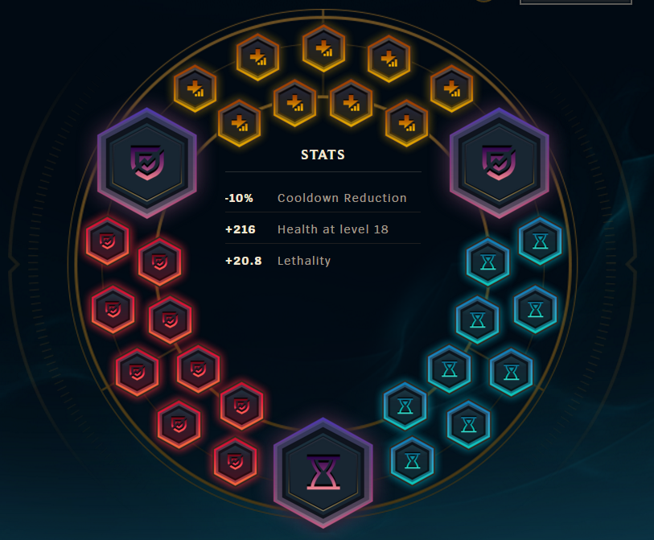
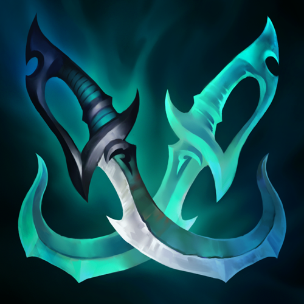
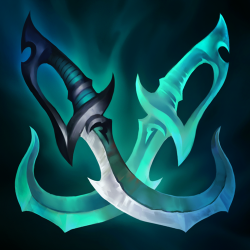

Introduction
This guide is a work in progress. There are tons of typos, stuff to fix up, etc. Everything is subject to change. It was started as a small web development project (to try out different techniques in CSS), but I thought, why not make a good guide, updated per patch, with everything there is to know about gangplank? I present to you, the most in-depth written guide anybody has every made on Gangplank. I am currently hosting the website off my github.io site, I may pay for hosting should enough people be interested in this guide. You can see the entire creation and new updates here: Github Source
TODO
- Masteries
- Barrel spots
- Laning phase mentalities and strategies
- Wave control
- Matchups
- item builds
My name is inlorfaze. I have been playing gangplank since 2015 and have a cumulative 1 million mastery points on gangplank. I started playing him at gold 2 and got to masters with him. 
I play a tobias fate-inspired playstyle, mid lane preferred. This guide is not what I think is best, however. It will include several different playstyles and in-depth top lane discussion. I have played every type of gangplank you can think of - full ad runes, adc gangplank, jungle gangplank, ap gangplank, you name it. I've played it. In high elo NA. Which is why I think that this guide is actually worth reading. This guide is not law - you need to read through this guide, and play the many different variations. Gangplank is a champion that takes many games to learn - he is extremely rewarding, but expect to have a huge learning curve. Remember - practice makes perfect. Reading this guide isn't going to get you do diamond - reading this guide and finding your niche by playing a lot of gangplank will, however.
Follow this guide and you WILL gain elo
Order of priority to learn to win the game:
- Macro play: Learn rotations and positioning, never get caught
- Micro play: Stay healthy in lane, ward up strategically, and outtrade or solo kill
- Itemization: Build according to your playstyle and your enemies/matchup
The most common question: Mid or Top?
Probably one of the most frequently asked questions, the answer is it really is up to you. For mid lane, you enjoy:
- Shorter lane - harder to overextend
- Your jungler is closer - you won't feel like an island if you have a support and jungler roaming near you.
- Easier to manage matchups - You can play very safe without getting froze on, guaranteeing farm and relevance in the game
- Team Comp - you generally run glass cannon in this build, so your team can still have a tank top lane and round out your team composition much better
- Have more control of the map - roaming is much easier in the mid lane
- Use brush to use barrels
- Run AD and put pressure in top turret
- Build bruiser and 1v1/1v2
- Round out a team comp - maybe you have a tank support and utility mid, so your team needs more damage and aoe
Quick Guide
WORK IN PROGRESS
Runes
(CDR= Cooldown Reduction)Runes are very important on gangplank. There are many variations, and they all are useful depending on your playstyle. CDR Runes are very popular and good because it decreases your huge barrel cooldown a ton, and helps you farm with q's much easier in the early game. You can read this link for more reading.
Attack Damage - RECOMMENDED FOR BEGINNERS
Used more often in the top lane. Early game focused runes that will help you trade and push better. Take scaling health seals (yellows) against ap matchups, and alternatively change glyphs to magic resist or 6 flat CDR 3 scaling CDR 1 CDR quint if you want to give up 5% early CDR.
Scaling AD: I only know of one player who can use scaling AD effectively, that is godrjsdnd. It works best when paired with the full crit build. Check him out, I don't personally use it but it can work.
Lethality
Sacrifice early game stats altogether for a huge payout - run lethality runes. Lethality is a flat penetration stat that gets more and more effective as your enemies lvl increases. Therefore, early game you deal much, much less damage. It will make trading and last-hitting very difficult. However, come around triforce and level 7 and above and you will start seeing your lethality runes shine. This page will have the maximum damage in the late game.
SITUATIONAL: Swap out CDR for a lethality quint and magic resist glyphs (blues), useful for tough ap matchups that you still want to scale into, or swap out scaling health seals (yellows) for armor against tough ad matchups.
Masteries
The most common page for gangplank is 12-18-0, opting for bandit (a very effective mastery on gangplank - your Parrrley counts as a melee attack, giving you 10 gold every time you Q an enemy champion), Sorcery, and fresh blood. The other options are personal preference and playstyle. We will be discussing them. (GRASP VS TLD, STORMRAIDERS, ETC. WORK IN PROGRESS)
Builds
Builds vary by situation. I'll be honest - in high elo, you just don't seem to be strong enough to carry games unless you run full damage. You need to scout out your team, figure out who will be doing the most damage to you, who's the most skilled player on your team and on theirs, and build accordingly.
Starting Items
Starting Items vary widely. They are very situational, and depend highly on the matchup (as well as the jungler). To figure out which starting item to use, see the matchup guide
Skill Upgrades: Always max Q -> E -> W, with ult every time.
What about levels 1-4?: Don't level up anything level 1 if they have a morgana, lux, etc. and can kill you level 1. In this case you'd need to level up w first to escape that. Otherwise, always start Q. Now, there are three early lane starting skills. Some run Lvl 3 Q > W > Q, for easy harass. This is only good if you need to worry about an early level 2 or 3 gank from a jungler, like a Lee Sin, Elise, Rek'sai. Not only to cleanse cc, but to gain health. Tip!: IF they have a Zac, Rakan, etc. knocking you up and you need to escape, you can't cleanse knockups, however you CAN cleanse and flash, thus negating the knockup. Running Q > E > W is the most standard, because most likely you will just be sitting back, farming with Q and not have to worry too much about ganks. At level 2, get barrel and instantly place one down just behind your minion wave, or directly in it. Running Q > E > Q is also viable. It is useful if you are against an easy matchup, such as Kassadin or Nasus. Having level 2 Q damage will increase your barrel damage even more, helping you shove a lane with barrels, or going for an early kill.
Glass Cannon


 

This build works wonders. This is my go-to build, if you ever watch some of my low elo climbing builds, I literally run this build every time. And it works, especially with Lethality Runes. If you want to run lethality runes, this is the build for you. Why? Because Youmuu's gives you an excellent build path (just stack long swords!), and the lethality, 10% cdr to max out (with 10% CDR Runes), and the movespeed active is highly underrated.
Options: Change out for or in the case of a fizz, leblanc, veigar and you need more survivability.
 vs | You should buy Serrated Dirk after triforce, then complete caulfields. This is because the passive movespeed is very useful for getting back to lane and picking up extra gold, as well as giving you 10 lethality, which makes your barrels hit very hard. It is a cheap mini-powerspike.
vs | You should buy Serrated Dirk after triforce, then complete caulfields. This is because the passive movespeed is very useful for getting back to lane and picking up extra gold, as well as giving you 10 lethality, which makes your barrels hit very hard. It is a cheap mini-powerspike.
vs | I recommend Statikk shiv first. Build zeal first (you will have IE already, so getting more crit is priority!) This is because the magic damage crits, and will make you hit very hard with your Q (which procs it) if you crit, as well as giving you room to clear waves without barrels should you need to. Phantom Dancer is great as well, good in 1v1's top lane vs Yasuo, Riven, etc. but will not provide that huge burst you will see with Statikk Shiv.
Double Zeal? I have seen a few gangplank mains run double zeal after IE, it might be good. You can try it, you will miss out on the damage from statikk shiv or the defense/movespeed from phantom dancer as well as the movespeed (zeal movespeed is unique) in exchange for an extra 10% crit chance.
After your triforce, you are very strong. Against a squishy with no extra armor, you should be dealing nearly half of their hp with a barrel. This makes 1v1's after your triforce powerspike very strong and can catch many people off guard. Use your ult and flash to secure a kill, 100-0 if you can manage to land a barrel.
Full Crit WIP
Bruiser WIP
Barrels
Note: All of these combos are useful. A good gangplank will use the right one at the right time, making gangplank one of the most advanced champions to play. I will discuss how to know when to use the right combo in the mechanics section. Barrel cooldown decreases at level 7 and level 13.
Single Barrel: Most useful at level 13, you can place these right on top of people, and if you practice the timing, most likely will hit people. Useful for chasing, and against tanks who have slower attack speed. Most efficient, since it only takes one barrel.
Double Barrel: Bread and butter combo. Most useful combo, use it when chasing, kiting, etc. See: double barrel with flash
One Part: A bit harder of a combo to land, the key is to place a barrel, press Q on the barrel outside of Q range, and as Gangplank walks up to Q it, place another barrel as soon as you see him do his Q animation. The time it takes for his Q to travel will be just enough time to get his second barrel off.
Mechanics
Knowing when to use barrels to maximize damage is very important. Gangplank can only hold 3 barrels at a time, so keeping the cooldown of your next barrel is very important.
Enemies destroying your barrels: ADC's (I'm looking at you Caitlyn!) love to try to auto attack your barrels. As you reach higher elo, you will notice nearly everyone realizes if they auto your barrel, you will lose most of your damage and render you useless. Be not afraid, high elo mains have figured it out! If a melee champion is trying to auto your barrels, you are in a good position. Outplay and they will lose an autoattack AND you will get a barrel off. Pre level 13, your barrels tick down slower. Use this to your advantage by placing it -> Enemy walks up to auto the barrel -> and you walk up and auto the barrel, then Q just when the barrel's first tick goes. This method works nearly every time, however you might lose out on sheen damage. This works best early game pre-sheen.
Against ranged enemies, it can be just as easy to land a barrel. Instead of q'ing the barrel, you place another and auto it just as it ticks down. With good timing, you should be able to always get the auto off faster than the adc's auto, since you are melee and closest the barrel.
Ashe trying to auto my barrel feat. Gosu. Show'em who's boss!

Saving barrels: Using the triple barrel combo is fun and flashy. However, it may not be the best combo to use in a teamfight. Using three barrels means you won't have any left. One trick you can use is to place a barrel in a place that the enemy can't see or probably won't go to auto, then wait for the barrel cooldown. In this case, you will have 1 barrel down, and 3 barrels left, allowing you to do more with an extra barrel. If you only use a triple barrel combo in a fight, landing one barrel may not be enough, so use double and single barrels, like in this example.

Using Flash: You can use flash to make some flashy plays. These are difficult (and risky if you mess up and just flash in place), however I think the most reliable and best one is the flash auto barrel.


If you're feeling lucky, try out the flash triple barrel.

Chokeholds and teamfight spots: WIP
Passive resets WIP
Orange baits WIP
Macro Play
WIP, will discuss rotations, when to push, lane dominance, etc.